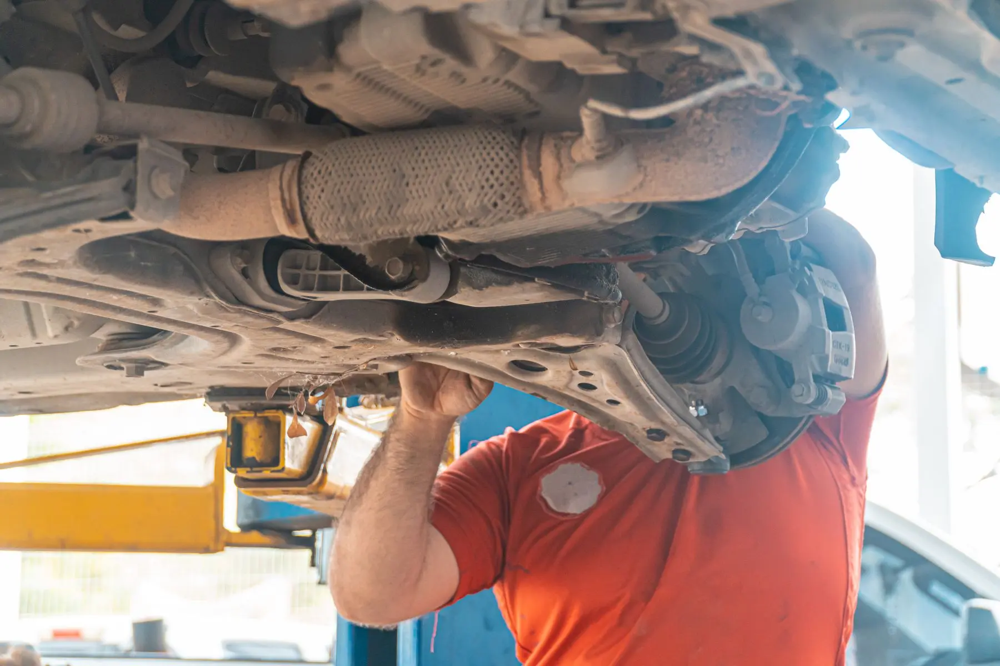

WHAT'S INCLUDED
SUSPENSION & STEERING SERVICE.
- Suspension & Steering Repair as a dedicated service option
- Vehicle and symptom details
- Location-first appointment routing
- Connection to Freedom Drive Alignment when alignment is also needed
MECHANIC
Tires 4 Less offers Suspension & Steering Repair through its Charlotte and Concord shops. Noise, looseness, uneven ride feel or tracking concerns are reasons to request an inspection. Wheel Alignment is a separate service available at Freedom Drive only.
Choose a Tires 4 Less location for the repair request. Wheel Alignment is offered at Freedom Drive only.
WHAT'S INCLUDED
Request Suspension & Steering Repair for noise, looseness, ride or tracking concerns.
SERVICE DETAILS
Clunking over bumps, loose steering feel, uneven ride behavior or tracking concerns can involve different parts of the vehicle. Suspension & Steering Repair focuses on the mechanical system; Wheel Alignment is a separate Freedom Drive-only service. The shop may need to inspect the vehicle before deciding which path actually addresses the symptom.
SERVICE DETAILS
Tell the shop what the vehicle is doing, when you notice the problem and whether anything recently changed, such as tire service or another repair. Include the vehicle year, make and model and choose the shop you want to visit. If Alignment also becomes relevant, Wheel Alignment is available at Freedom Drive.
SERVICE CONTEXT
Suspension and steering concerns can show up over bumps, during turns, under braking or while the vehicle is tracking straight. Tell the shop when the symptom appears and whether you notice noise, looseness, pulling or uneven ride behavior. That context helps the inspection start in the right area.
Wheel Alignment can be related to tracking and tire-wear concerns, but it is a separate service offered at Freedom Drive only. If the concern involves mechanical components, the Suspension & Steering request remains the primary starting point.
SERVICE VISUALS
Follow the service from the main vehicle view through two supporting work details, keeping the process easy to scan before you request service.

VEHICLE / SUSPENSION STEERING / COMPONENTS
STEERING / COMPONENTS INSPECTION / NEXT STEP
INSPECTION / NEXT STEPHOW IT WORKS
Select the Tires 4 Less shop for SUSPENSION & STEERING.
Include the vehicle and the details that explain what you need.
Send a preferred date and time. The appointment is confirmed only when the shop responds.
SYMPTOM CONTEXT
Suspension and steering concerns can appear in more than one way. A clunk over bumps, loose steering feel, uneven ride behavior or a vehicle that no longer tracks normally can all be reasons to request an inspection. Include when the symptom happens, whether it changed suddenly and whether recent tire or repair work happened before the issue started.
RELATED SERVICES
Suspension & Steering Repair focuses on mechanical components and vehicle behavior. Wheel Alignment focuses on wheel angles and is available at Freedom Drive only. If the shop finds that both areas need attention, the service paths can connect without treating Alignment as a substitute for a suspension or steering inspection.
COMMON QUESTIONS
Noise over bumps, loose steering feel, uneven ride behavior or tracking concerns are reasons to request an inspection.
No. Alignment is a separate service offered at Freedom Drive only.
No. The request routes the concern, but the specific vehicle still needs inspection.
Vehicle year, make and model, symptoms, preferred location and preferred date/time.
READY?
Choose the location, send your vehicle details and tell us your preferred time.
START SERVICE REQUEST